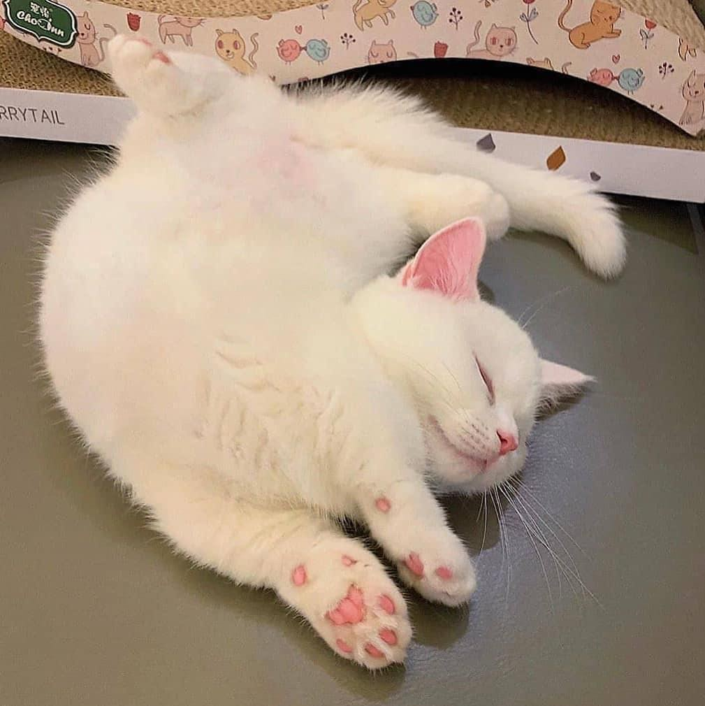
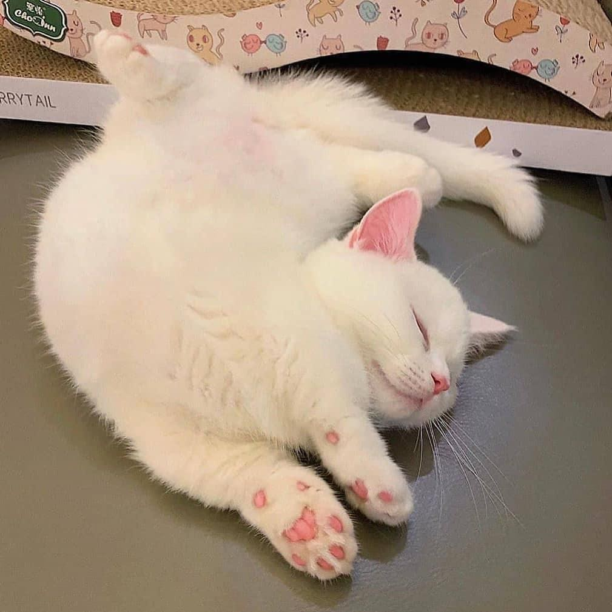

Posted on 22 November 2022
我想要的並不是站在舞台中央，而是平凡生活中的充足安適。
每天都是不同的紀念日。
不引人注目，也許是一種保護色，它能夠阻隔外在的刺激，讓我在自己的小世界中取暖。 即使生活漸趨平淡，但我覺得反而帶給我一種幸福感，我所要的不是以往那樣「出眾」的自己，而是在「普通」的生活中，也能開懷大笑的真正的自己。 我想要的並不是站在舞台中央，而是平凡生活中的充足安適。
每天都是不同的紀念日。
不引人注目，也許是一種保護色，它能夠阻隔外在的刺激，讓我在自己的小世界中取暖。 即使生活漸趨平淡，但我覺得反而帶給我一種幸福感，我所要的不是以往那樣「出眾」的自己，而是在「普通」的生活中，也能開懷大笑的真正的自己。 